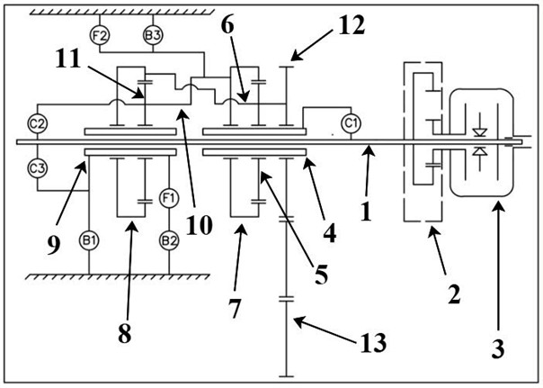
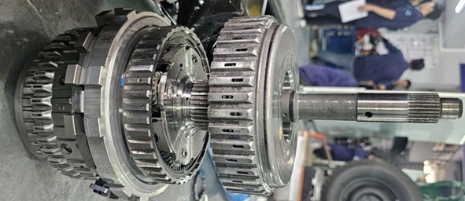
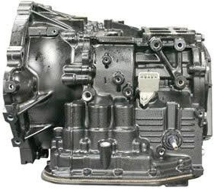

Hộp số tự động U340E thuộc nhóm hộp số tự động 4 cấp dạng transaxle (hộp số - truyền lực cuối - vi sai tích hợp trong cùng vỏ), thường bố trí trên các xe dẫn động cầu trước dùng động cơ 1NZ-FE. Về mặt kết cấu, U340E tổ chức dòng công suất theo chuỗi: động cơ → biến mô thủy lực (có ly hợp khóa biến mô) → trục sơ cấp → cụm bánh răng hành tinh kiểu CR-CR + bộ bánh răng trung gian → truyền lực cuối + vi sai → bán trục.
Để tạo các cấp số, hộp số phối hợp 3 ly hợp ma sát (C1, C2, C3), 3 phanh (B1, B2, B3) và 2 khớp một chiều (F1, F2).


U340E dùng vỏ hợp kim nhôm dạng hai nửa (thân chính và nắp/đai bắt), bên trong chia khoang rõ ràng cho từng nhóm cụm: khoang biến mô - bơm dầu ở phía trước (gần động cơ), khoang cơ cấu hành tinh và phần tử ma sát ở vùng giữa, khoang truyền lực cuối - vi sai ở phía sau. Cách bố trí này giúp rút ngắn chiều dài theo phương dọc xe nhưng vẫn đảm bảo đồng tâm giữa trục sơ cấp và cụm cơ cấu hành tinh, đồng thời dễ tổ chức các đường dầu trong thân van và thân hộp.
Trong tài liệu tính toán, sơ đồ bố trí U340E được liệt kê theo thứ tự các cụm chính: (1) trục sơ cấp, (2) bơm, (3) biến mô, (4) bánh răng mặt trời trước, (5) bánh răng hành tinh trước, (6) cần dẫn trước, (7) bánh răng bao trước, (8) bánh răng bao sau, (9) bánh răng mặt trời sau... Việc đặt tên - định vị này rất quan trọng vì toàn bộ logic lắp ráp và tạo số của U340E thực chất là khóa - nối các phần tử vừa nêu bằng ly hợp/phanh.

Nguồn năng lượng điều khiển (áp suất dầu) do bơm dầu tạo ra. Dầu hộp số được chứa ở các-te, qua lưới lọc, được bơm hút lên để tạo áp suất đường chính, sau đó phân phối qua thân van (valve body) tới các cơ cấu chấp hành (piston ly hợp/phanh) và các kênh bôi trơn - làm mát. Ở góc nhìn tổng quan, bơm dầu, thân van và các đường dầu tạo thành hệ mạch tuần hoàn, còn các ly hợp/phanh là phần tử tiêu thụ áp suất để biến năng lượng thủy lực thành lực ép ma sát.
Về cơ khí, U340E dùng hai bộ truyền hành tinh đơn giản và một cặp bánh răng trung gian, được tổ chức theo kiểu CR-CR (cần dẫn của bộ này liên hệ với bánh răng bao của bộ kia), nhờ vậy chỉ với số lượng phần tử ma sát vừa phải vẫn tạo được 4 số tiến và 1 số lùi. Truyền lực cuối và vi sai đặt chung trong vỏ, nhận mô-men từ trục ra/cụm cuối của cơ cấu hành tinh qua cặp bánh răng truyền lực cuối rồi phân phối ra 2 bán trục.
U340E sử dụng triết lý ít phần tử nhưng đa nhiệm: C1 tham gia gần như toàn bộ dải số tiến; C2 đảm nhiệm truyền thẳng/OD tùy tổ hợp khóa; C3 dành riêng cho số lùi. Các phanh B1-B3 và khớp một chiều F1-F2 giúp tạo điều kiện khóa một phần tử hành tinh theo một chiều hoặc cố định theo hai chiều.
Bảng chức năng cơ bản của từng phần tử thể hiện rõ vai trò nối - giữ: C1 nối trục trung gian với mặt trời trước; C2 nối trục trung gian với cần dẫn sau; C3 nối trục trung gian với mặt trời sau; B1 giữ mặt trời sau; B3 giữ bao trước và cần dẫn sau; F1/F2 ngăn quay ngược theo các điều kiện nhất định.
| Nhóm | Thành phần tiêu biểu | Vai trò kết cấu - chức năng |
|---|---|---|
| Truyền lực thủy lực đầu vào | Biến mô + lock-up | Khuếch đại mô-men khi khởi hành, triệt trượt khi chạy ổn định. |
| Nguồn áp suất | Bơm dầu, các-te, lọc | Tạo áp và cấp dầu cho chấp hành + bôi trơn/làm mát. |
| Truyền lực cơ khí | 2 bộ hành tinh + bánh răng trung gian + truyền lực cuối/vi sai | Tạo tỉ số truyền và đưa mô-men ra bánh xe. |
| Điều khiển cơ khí (ma sát) | C1, C2, C3; B1, B2, B3; F1, F2 | Nối/khóa phần tử hành tinh để hình thành từng cấp số. |
| Điều khiển thủy lực - điện | Thân van, solenoid | Phân phối áp suất theo chiến lược chuyển số. |
✏️ Chèn: Kết cấu biến mô (bơm, turbine, stator, ly hợp khóa), nguyên lý truyền momen thủy lực, đặc tính khuếch đại, hoạt động lock-up clutch khi tốc độ ổn định.
✏️ Chèn: Kết cấu bơm dầu loại cánh gạt dẫn động từ vỏ biến mô, thông số áp suất làm việc, quy trình kiểm tra khe hở bơm, vai trò cấp áp cho mạch thủy lực điều khiển.
✏️ Chèn: Sơ đồ cụm CR-CR (hai bộ hành tinh nối tiếp), phân tích các phần tử: bánh răng mặt trời, bánh răng bao, cần dẫn, bánh răng hành tinh — nguyên lý tạo các tỉ số truyền khác nhau.
✏️ Chèn: Bảng phần tử gài C1, C2, C3 (ly hợp), B1, B2, B3 (phanh), F1, F2 (khớp 1 chiều) — trạng thái ON/OFF theo từng cấp số, kết cấu đĩa ma sát, piston thủy lực, lò xo hồi vị.